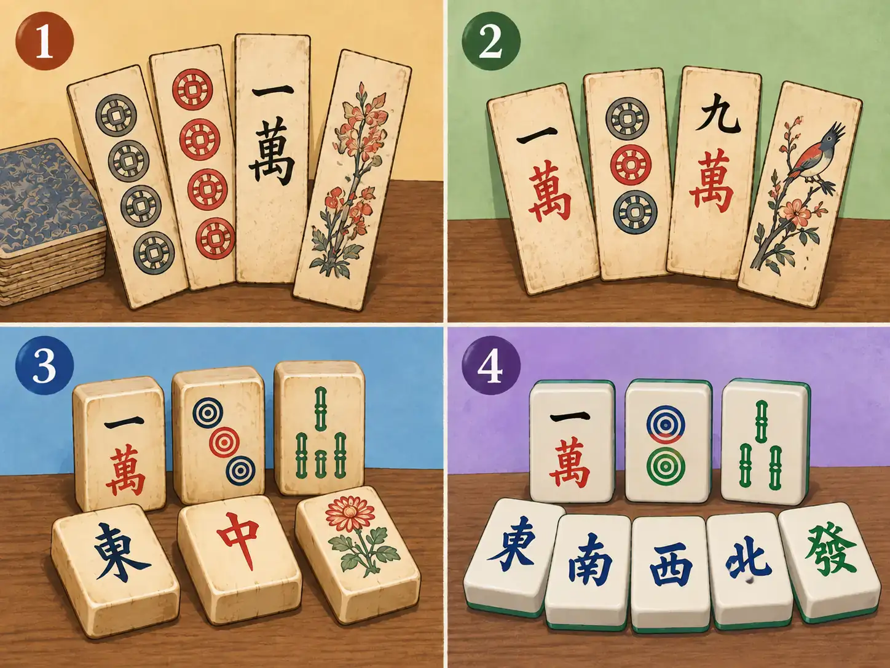

麻将：在小方牌以前，它竟然是纸牌
Mahjong: Before the Tiles, There Were Cards
Page 1
在小方牌以前，它竟然是纸牌
Before the Tiles, There Were Cards

Four stages show the change from long paper cards to bone-and-bamboo pieces and modern mahjong tiles.
如果你隔着一个房间听过别人打májiàng · 使用牌张组合成牌型的中国传统游戏。，大概不会认错那个声音。一大堆硬硬的小方牌在桌上被几双手推来推去，碰得“哗啦啦”直响。这个声音听起来太熟悉了，也很容易让人觉得：麻将一定已经这样响了几千年吧？
其实没有。
我们今天熟悉的麻将，主要是在十九世纪的晚清时期才慢慢形成的。如果沿着它的家族历史再往前找，还会碰到一个很让人意外的祖先。在麻将牌以前，竟然是纸牌。
If you have ever heard a májiàng · 麻将 · A Chinese game in which players draw and discard tiles to build combinations. game from the next room, you probably know the sound: dozens of hard tiles sliding and knocking together as four pairs of hands mix them across a table. It sounds so familiar—and so old—that you might imagine people making the same noise in China thousands of years ago.
But they were not.
The mahjong we know today mainly took shape in China in the 1800s, during the late Qīng cháo · 清朝 · China's last imperial dynasty, lasting from 1644 to 1912.. And if you travel farther back through its family history, you find something surprising. Before there were mahjong tiles, there were paper cards.
Page 2
麻将的“老祖宗”又薄又长
The Great-Great-Grandparents Were Thin
现代麻将出现以前，中国早就有很多纸牌游戏。Míng cháo · 1368年至1644年的中国朝代。晚期有一种很流行的牌戏叫“mǎdiào · 明代流行的一类长条纸牌游戏。”，用的是细细长长的纸牌。牌上的很多图案都和钱有关，有铜钱、成串的铜钱，也有表示数目的字样。
当然，麻将并不是有人拿起一副马吊牌，突然宣布：“我今天发明一个新游戏！”游戏的变化通常没这么整齐。这个玩法借一点，那个规则改一下，不同地方的人又各自玩出新的花样，一代一代传下去。
不过，历史学者确实发现，晚明的马吊等纸牌游戏和后来出现的麻将有着很深的关系。到了晚清，这个纸牌游戏的家族里，慢慢发展出了越来越接近现代麻将的玩法。
然后，一个非常明显的变化发生了：纸牌变成了硬硬的小方牌。
China had many card games long before modern mahjong appeared. One popular game in the late Míng cháo · 明朝 · The Chinese dynasty that lasted from 1368 to 1644. was called mǎdiào · 马吊 · A family of long, narrow paper-card games popular in Ming China.. Its cards were long, narrow pieces of paper, and many of their designs were connected with money: coins, strings of coins, and numbers.
Modern mahjong did not simply appear from one pack of madiao cards. Games change slowly and messily. Players borrow an idea from one game, change a rule from another, invent new combinations, and pass their favorite version to someone else.
But historians have found a real connection between this older family of Chinese card games and mahjong. By the late Qing period, games descended partly from those paper-card traditions were developing into something much closer to the mahjong we recognize.
Then one of the biggest changes happened. The cards became tiles.
Page 3
正面是骨头，背面是竹子
Bone on the Front, Bamboo on the Back
早期那些已经很像今天麻将的牌，当然不是塑料做的。大英博物馆收藏着一副十九世纪的中国麻将。它的牌面是一层骨片，上面的图案刻出来以后再涂上颜色；背面则用竹子制成。
有些Qīng cháo · 1644年至1912年的中国最后一个帝制王朝。麻将还更加讲究，会用象牙配竹背。
如果把这些老麻将和今天的麻将放在一起，其实一眼就能看出它们是一家人。有些字和圆圈图案已经非常熟悉。变化最大的，反而是做牌的材料。
以前的麻将可能用骨、竹、木头或者象牙一张张加工。今天常见的麻将，则大多用塑料、亚克力一类的现代材料制造。麻将换了衣服，却没有完全换掉自己的样子。
Those first familiar-looking mahjong tiles were not made of plastic. The British Museum owns a Chinese mahjong set from the nineteenth century whose tiles are made from bone and bamboo. A thin piece of bone forms the face, with the design carved and colored into it. Bamboo forms the thicker back.
Other surviving Qing sets were even fancier. Some used ivory and bamboo.
Place one of those old sets beside a modern set, and the family resemblance is easy to see. The characters and circle patterns already look familiar. What has changed most is the material.
Old tiles might be carved one by one from bone, bamboo, wood, or ivory. Modern tiles are usually made from manufactured materials such as plastic or acrylic. The game changed its clothes, but it still looked like itself.
Page 4
一个不算古老，却跑得很快的游戏
A New Game That Quickly Went Everywhere
麻将变成小方牌以后，流行得非常快。历史研究发现，到了晚清，从城市街巷到有钱人家，都有人喜欢玩麻将，后来它甚至一路玩进了宫廷。
二十世纪初，麻将又走出了中国。到了1920年代，它在欧美一度非常流行。麻将被带到不同国家以后，各地又慢慢发展出自己的玩法，所以今天在不同地方打麻将，规则甚至使用哪些牌，都可能不完全一样。
可是有一个场面一直很好认。一大堆麻将被推到桌子中央，几双手一起伸进去，刚才整整齐齐的小方牌一下子全乱了，屋子里马上响起熟悉的声音：哗啦啦……很难想象，这么热闹的一桌小方牌，在它的家族历史深处，居然还有一群又薄又轻的纸牌亲戚。
麻将并不是几百年一动不动地传下来。它从纸牌变成小方牌，从骨头和竹子变成现代材料，又从中国的一种牌戏，变成世界各地许多不同的麻将。也许，它能一直流传下来，正是因为它一直在变。牌变了。围着桌子坐在一起的人，却一直都在。
Once mahjong appeared in its tile form, it spread remarkably quickly. Historical research describes it moving from towns and city neighborhoods into wealthy households and eventually even into the imperial court.
By the 1920s, mahjong had also become a craze outside China. Sets were exported overseas, and different communities began developing their own versions of the game. That is why mahjong rules—and even the exact set of tiles used—can be different depending on where you play.
But one thing has remained wonderfully easy to recognize. A pile of tiles is pushed into the middle of a table. Several hands reach in. The neat rows disappear, and the room fills with that unmistakable rattling sound. It is hard to believe that somewhere far back in the family tree of all those noisy little tiles were a handful of thin paper cards.
Mahjong did not stay the same for centuries. It changed from cards to tiles, from carved bone and bamboo to modern materials, and from one Chinese game tradition into many versions played around the world. Perhaps that is part of why it survived. The pieces changed. People kept gathering around the table.